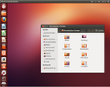
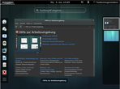
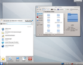
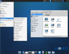
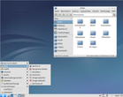

Welches Thema gehört wohin
- Welches Thema gehört wohin?
- Ich habe eine Frage zu folgendem Themenber...
- Portal "ubuntuusers.de"
- Installation und Aktualisierung von Ubun...
- Systemstart und Bootmanager
- Bedienung und Verwaltung von Ubuntu
- Installation von Programmen
- Bedienung von einzelnen Programmen
- Frage zu meiner Hardware
- Funktion meines Bildschirms
- Datensicherung/Backups
- Sicherheit von Ubuntu
- Internet/WLAN/Netzwerk/Serverdienste
- Programmieren
- Problem mit meiner Desktopoberfläche...
- ...ich benutze Unity (Ubuntu-Standard-De...
- ...ich benutze den GNOME-Desktop (Ubuntu...
- ...ich benutze den KDE-Desktop (Kubuntu)...
- ...ich benutze den XFCE-Desktop (Xubuntu...
- ...ich benutze den LXDE-Desktop (Lubuntu...
- ...ich benutze einen anderen Desktop
- Problem mit Audio, Video oder TV
- Frage zu einem Projekt
- Allgemeine Frage zur Linux-/Open-Source-...
- Hinweise zu sonstigen/allgemeinen Fragen...
- Links
Welches Thema gehört wohin?¶
Willkommen im Foren-Glossar von ubuntuusers.de
Diese Seite soll neben dem Artikel Forum/Kurzanleitung der inhaltlichen Orientierung im Forum von ubuntuusers.de dienen.
Hier findest du Links in die geeigneten Forenbereiche, wenn du nicht genau weißt, wo deine Anfrage am besten aufgehoben ist. Der Link hinter dem grünen Pfeil ( ) leitet dich in den richtigen Forenbereich weiter.
) leitet dich in den richtigen Forenbereich weiter.
Ich habe eine Frage zu folgendem Themenbereich¶
Portal "ubuntuusers.de"¶
Lob oder Kritik am Portal oder den Betreibern loswerden
Rund um ubuntuusers.deFragen zur Bedienung des Forums stellen
Rund um ubuntuusers.deVerbesserungsvorschläge einbringen
Rund um ubuntuusers.deProbleme mit der Wiki-Software an sich (Darstellungsfehler, obskure Fehlermeldungen)
Rund um ubuntuusers.deAllgemeine Fragen, Unklarheiten und Fehler (Bugs) rund um Inyoka
Rund um InyokaThemen rund um das Wiki
Rund ums WikiFragen zur Wiki-Syntax und -Bedienung
Rund ums WikiUmsetzung neuer Themen
Rund ums WikiIch habe einen neuen Artikel erstellt und möchte den Wiki-Moderatoren anzeigen, daß der Artikel fertig ist, und bitte um evtl. Verbesserungsvorschläge
Rund ums WikiAbsprachen des UWR-Teams
Ubuntu-WochenrückblickMeinungen zum UWR
Ubuntu-WochenrückblickVorschläge für Meldungen und Termine für den UWR
Ubuntu-WochenrückblickAllgemeine Fragen zu Themen im Blog
Rund um den PlanetenDiskussionen zu entstehenden Artikel oder gemeinsamen Artikelserien
Rund um den Planeten
Installation und Aktualisierung von Ubuntu¶
Allgemeine Fragen zu Ubuntu
Vor der Installation und grundlegene FragenProbleme mit der Ubuntu-CD
Vor der Installation und grundlegene FragenDas Booten von Installationsmedien funktioniert nicht
Vor der Installation und grundlegene FragenInstallation von Ubuntu
Ubuntu installieren und aktualisierenFragen zur Aktualisierungsverwaltung
Ubuntu installieren und aktualisierenFragen zum Umstieg auf eine neuere Version von Ubuntu
Ubuntu installieren und aktualisieren
Systemstart und Bootmanager¶
Probleme beim Booten des Systems
System einrichten und verwaltenDas Booten nach der Installation funktioniert nicht
System einrichten und verwalten
Bedienung und Verwaltung von Ubuntu¶
Das installierte System verwalten
System einrichten und verwaltenSystemtuning (Dienste deaktivieren usw...)
System einrichten und verwaltenEinrichtung Bereitschaft/Ruhezustand
System einrichten und verwaltenBenutzer & Gruppen verwalten
System einrichten und verwalten
Installation von Programmen¶
Einrichten, Arbeiten und Probleme mit der Paketverwaltung
Ubuntu installieren und aktualisierenInstallation von Programmen
Ubuntu installieren und aktualisierenInstallation von „fremden“ .deb Paketen
Ubuntu installieren und aktualisierenFragen zur Installation von Programmen
Ubuntu installieren und aktualisierenInstallation von Programmen aus dem Quelltext
ProgrammeHilfegesuche bei Installation von Spielen
SpieleErstellung und Modifikation von Debianpaketen
PaketbauPPA einrichten und verwalten
PaketbauPakete in Paketquelle hochladen
PaketbauSuche nach Alternativen zu Windows-Programmen sowie bestimmter Software unter Ubuntu
ProgrammeDiskussionen übers Spielen unter Linux
Spiele
Bedienung von einzelnen Programmen¶
Probleme beim Zugriff einer bestimmten Software auf das Internet
Ubuntu verwendenDie Bedienung eines Programms
ProgrammeKonfiguration von Programmen
ProgrammeSuche nach Programmen für einen vorgegebenen Zweck
ProgrammeFragen zur Bedienung allgemeiner Software
ProgrammeSuche nach einem bestimmten Programm
ProgrammeFragen zu Virenscannern, Firewalls und Backupsoftware
SicherheitFragen rund um Sicherheitssoftware (Portscanner & Co)
SicherheitHilfegesuche bei technischen Problemen mit Spielen
SpieleRechtschreibfehler in einem Programm gefunden (z.B. »Abrechen« statt »Abbrechen«)
Lokalisierungunpassende Übersetzung gefunden (z.B. »Vorwärts« statt »Weiter«)
LokalisierungUnvollständig übersetztes Programm gefunden (Fensterinhalt übersetzt, Fenstertitel auf englisch)
LokalisierungSuche nach Alternativen zu Windows-Programmen sowie bestimmter Software unter Ubuntu
ProgrammeDiskussionen übers Spielen unter Linux
SpieleDiskussionen über Bildbearbeitungstechniken
Grafik- und Desktopgestaltung
Frage zu meiner Hardware¶
Ist meine Hardware für Ubuntu geeignet?
Vor der Installation und grundlegene FragenKaufberatung zu linuxkompatibler Hardware
KaufberatungProbleme mit Peripheriegeräten wie Druckern, Scannern oder PDAs
Ubuntu verwendenFunktioniert mein Drucker mit Linux?
Drucken, Scannen, FaxenProbleme mit Druckern
Drucken, Scannen, FaxenProbleme mit Multifunktionsgeräten
Drucken, Scannen, FaxenProbleme mit Faxgeräten
Drucken, Scannen, FaxenProbleme mit Scannern
Drucken, Scannen, FaxenInstallation und Konfiguration von Telefonanlagen
Drucken, Scannen, FaxenEinrichtung eines Druckers im Netzwerk
Drucken, Scannen, FaxenEinrichtung eines Scanners im Netzwerk
Drucken, Scannen, FaxenFragen zum Verbinden und Synchronisieren von PDA, Smartphone, Telefon und Notebooks mit anderen Linux-PC
Synchronisation von mobilen GerätenGenerelle Fragen zur Kompatibilität von PDA, Smartphone, Telefon mit Ubuntu
Synchronisation von mobilen GerätenEinrichtung von Hardware
System einrichten und verwaltenInstallation von Treibern für spezielle Geräte (Webcams, DVB-Sticks oder ähnliches), die nicht "out of the box" laufen
MultimediaDie Soundkarte gibt keinen Ton von sich
MultimediaTV und Video wiedergeben, aufnehmen und bearbeiten
MultimediaEinrichtung von Sound, Mikrofon,...
MultimediaEinrichten von Soundkarten
MultimediaEinrichtung einer TV-Karte
MultimediaInstallation des passenden Grafikkartentreibers
Grafik, Tastatur und MausEinstellen der richtigen Bildschirmauflösung
Grafik, Tastatur und MausEinrichten der Parameter für Maus, Tastatur, Controller oder Grafiktablett
Grafik, Tastatur und MausEinrichten von Grafikkarten und Eingabegeräten (Tastatur, Maus, ...)
Grafik, Tastatur und MausEinrichten der Parameter für Maus, Tastatur, Controller oder Grafiktablett
Grafik, Tastatur und MausEinrichten von Grafikkarten und Eingabegeräten (Tastatur, Maus, ...)
Grafik, Tastatur und MausAutomatisches Einbinden von erkannten Datenträgern
Grafische OberflächeProbleme mit der Ubuntu-CD
Vor der Installation und grundlegene FragenDas Booten von Installationsmedien funktioniert nicht
Vor der Installation und grundlegene Fragen
Funktion meines Bildschirms¶
Die grafische Oberfläche funktioniert nicht
Grafik, Tastatur und MausInstallation des passenden Grafikkartentreibers
Grafik, Tastatur und MausEinstellen der richtigen Bildschirmauflösung
Grafik, Tastatur und MausEinrichten von Grafikkarten
Grafik, Tastatur und MausEinrichtung des XServers
Grafik, Tastatur und Maus
Datensicherung/Backups¶
Backup des bisherigen Systems (Sicherheitskopien)
BackupsFragen rund um die Erstellung und Verwaltung von Sicherheitskopien
BackupsDatenverlust, Datenrettung und Wiederherstellung von Daten
SicherheitFragen zu Backupsoftware
Sicherheit
Sicherheit von Ubuntu¶
Fragen zu Virenscannern, Firewalls, Backup und Verschlüsselung
SicherheitFragen zur Sicherheit bzw. Absicherung bestimmter Software
SicherheitFragen rund um Sicherheitssoftware (Portscanner & Co)
SicherheitVerschlüsselung
SicherheitSicherheitslücken
SicherheitPasswörter
Sicherheit
Internet/WLAN/Netzwerk/Serverdienste¶
Verbindung ins Internet (oder Netzwerk)
Netzwerk und Internetzugang einrichtenProblem mit dem Treiber für deine (W)LAN-Karte
Netzwerk und Internetzugang einrichtenLAN, WLAN, oder andere Funktechnologien einrichten
Netzwerk und Internetzugang einrichtenEinrichten des Internetzugangs
Netzwerk und Internetzugang einrichtenEinrichtung eines Druckers im Netzwerk
Drucken, Scannen, FaxenEinrichtung eines Scanners im Netzwerk
Drucken, Scannen, FaxenFragen zum Verbinden und Synchronisieren von PDA, Smartphone, Telefon und Notebooks mit anderen Linux-PC
Synchronisation von mobilen GerätenProbleme beim Zugriff einer bestimmten Software auf das Internet
Ubuntu verwendenRoutingprobleme
Fortgeschrittene NetzwerkkonfigurationEinrichtung von Netzwerkinfrastruktur
Fortgeschrittene NetzwerkkonfigurationNetzwerkprotokolle
Fortgeschrittene NetzwerkkonfigurationTCP und UDP
Fortgeschrittene NetzwerkkonfigurationLoad Balancing
Fortgeschrittene NetzwerkkonfigurationTraffic Shaping
Fortgeschrittene NetzwerkkonfigurationNetzwerkhardware und -treiber einrichten
Fortgeschrittene NetzwerkkonfigurationVerbindung zu einem Netzwerk bzw. dem Internet herstellen
Fortgeschrittene NetzwerkkonfigurationNetzwerkmonitoring
Fortgeschrittene NetzwerkkonfigurationEinrichten eines Netzwerks
Fortgeschrittene NetzwerkkonfigurationProbleme, die mehrere Rechner betreffen, Vernetzung untereinander, Routing-Probleme
Fortgeschrittene NetzwerkkonfigurationEinrichten von Freigaben zum Dateiaustausch
Serverdienste und Dateifreigaben im NetzwerkApache und andere HTTP Server
Serverdienste und Dateifreigaben im NetzwerkDatenbankserver wie z.B. MySQL
Serverdienste und Dateifreigaben im NetzwerkDateifreigaben im Netzwerk wie Samba, NFS, Netzwerkplatten und NAS-Systeme
Serverdienste und Dateifreigaben im NetzwerkFragen rund um Sicherheitssoftware (Portscanner & Co)
Sicherheit
Programmieren¶
Programmiersprachen unter Linux
Shell und ProgrammierenShellbefehle
Shell und ProgrammierenBenutzung von Tools wie cat, sed, awk, ps, grep, tar, usw.
Shell und Programmieren
Problem mit meiner Desktopoberfläche...¶
|  |
| Unity (Ubuntu) |
|  |
| GNOME-Shell (UbuntuGNOME) |
|  |
| KDE (Kubuntu) |
|  |
| XFCE (Xubuntu) |
|  |
| LXDE (Lubuntu) |
...ich benutze Unity (Ubuntu-Standard-Desktop)¶
Umgang mit der Unity Desktopumgebung
Unity (Ubuntu)Anpassung von Unity an die eigenen Wünsche und Vorstellungen
Unity (Ubuntu)Probleme mit Unity
Unity (Ubuntu)Einrichtung und Anpassung von Unity
Unity (Ubuntu)Einrichtung und Anpassung der Ubuntu Netbook Oberfläche (UNE) ab Version 10.10 (Maverick Meerkat)
Unity (Ubuntu)Probleme mit der Grafikkarte oder dem Monitor
Grafik, Tastatur und Maus
...ich benutze den GNOME-Desktop (Ubuntu GNOME)¶
Umgang mit der GNOME Desktopumgebung
GNOME (Ubuntu)Anpassung von GNOME an die eigenen Wünsche und Vorstellungen
GNOME (Ubuntu)Probleme mit GNOME
GNOME (Ubuntu)Einrichtung und Anpassung von Compiz und GNOME
GNOME (Ubuntu)
...ich benutze den KDE-Desktop (Kubuntu)¶
Umgang mit der Plasma Desktop Shell und Plasma Netbook Shell
KDE Plasma (Kubuntu)Kerntechnologien wie Nepomuk, Akonadi, Phonon und Solid
KDE Plasma (Kubuntu)Anpassung der Arbeitsfläche an die eigenen Wünsche und Vorstellungen
KDE Plasma (Kubuntu)Probleme mit der Arbeitsfläche (z.B. keine Kontrollleiste vorhanden, Miniprogramme fehlen)
KDE Plasma (Kubuntu)Probleme mit den Arbeitsflächeneffekten und dem KDE Fenstermanager im Allgemeinen
KDE Plasma (Kubuntu)
...ich benutze den XFCE-Desktop (Xubuntu)¶
Umgang mit der Xfce Desktopumgebung
XFCE (Xubuntu)Anpassung von Xfce an die eigenen Wünsche und Bedürfnisse
XFCE (Xubuntu)Probleme mit Xfce
XFCE (Xubuntu)Probleme mit Panel, Fenstern, Anzeigeelementen in Xfce
XFCE (Xubuntu)
...ich benutze einen anderen Desktop¶
Probleme rund um Fenstermanager, die nicht in den Desktopumgebungen eingebaut sind (z.B. Fluxbox, IceWM, Openbox, etc.)
LXDE und andere Fenstermanager
Problem mit Audio, Video oder TV¶
Installation von Treibern für spezielle Geräte (Webcams oder ähnliches), die nicht "out of the box" läuft
MultimediaDie Soundkarte gibt keinen Ton von sich
MultimediaAudio wiedergeben, aufnehmen und bearbeiten
MultimediaTV und Video wiedergeben, aufnehmen und bearbeiten
MultimediaEinrichtung von Sound, Mikrofon,...
MultimediaEinrichten von Soundkarten
MultimediaEinrichtung einer TV-Karte
Multimedia
Frage zu einem Projekt¶
Eigene Wallpaper, Iconsets oder Themes vorstellen
Grafik- und DesktopgestaltungEigene Werke vorstellen und diskutieren
Grafik- und DesktopgestaltungIch habe ein Projekt entdeckt oder ins Leben gerufen und möchte dies vorstellen
Projekte
Allgemeine Frage zur Linux-/Open-Source-Welt¶
Analyse von Presseartikeln
Rund um Linux und Open SourceNicht-konkrete Supportfragen zu einem Programm
Rund um Linux und Open SourceVorstellung aktueller Entwicklungen in der Linux-Community
Rund um Linux und Open SourceLob oder Kritik verschiedener Distributionen
Rund um Linux und Open SourceDiskussion der Wechselwirkungen zwischen der Freien-Software-Welt und der „Gesellschaft“
Rund um Linux und Open SourceAnwendertreffen (Übersicht-Regionen-Orte)
Anwendertreffen und MessenVeranstaltungskalender
Anwendertreffen und MessenVeranstaltung zur Aufnahme in den Kalender vorschlagen
Anwendertreffen und MessenLinux User Groups weitere Informationen auf Wikipedia
Anwendertreffen und MessenRegionale Ansprechpartner
Anwendertreffen und Messen
Hinweise zu sonstigen/allgemeinen Fragen¶
Fragen zu den verschiedenen Desktopumgebungen wie GNOME, KDE, XFCE und anderen Fenstermanagern und zu ihrer Bedienung
gehören in die jeweiligen BereicheEinrichtung der 3D-Effekte (Compiz & Co.)
Benutze hierfür das jeweilige Unterforum der verwendeten OberflächeInstallation eines Themes für eine Desktopumgebung
Passendes Forum nutzen (Gnome, KDE, etc.).Probleme, die vor dem Anmelden auftreten
keine pauschale Zuordnung möglich; je nach Symptomatik z.B. System einrichten und verwaltenVerbesserungsvorschläge für bestehende Wikiartikel.
in das zugehörige Support-Forum.Fragen, warum ein bestimmter Beitrag verborgen wurde
andere Foren bzw. in Private NachrichtenAnfragen zu Raubkopien und gecrackten Spielen: Entsprechende Anfragen werden an das Moderatorenteam weitergeleitet und der Thread, bis zur Klärung seitens der Moderatoren, gesperrt.
Kennenlernen anderer Ubuntuuser
LoungeDiskussionen mit Nutzern des Portals
andere Foren bzw. in Private Nachrichtenalle sonstigen Themen, die in kein anderes Forum passen
Lounge
- Erstellt mit Inyoka
-
 2004 – 2017 ubuntuusers.de • Einige Rechte vorbehalten
2004 – 2017 ubuntuusers.de • Einige Rechte vorbehalten
Lizenz • Kontakt • Datenschutz • Impressum • Serverstatus -
Serverhousing gespendet von